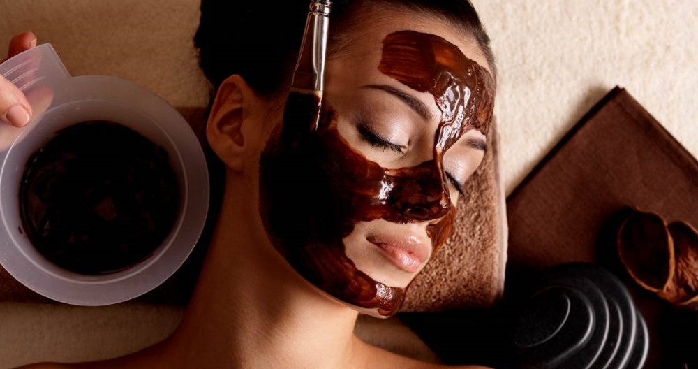
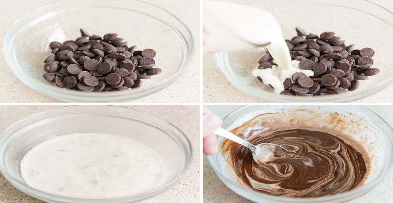
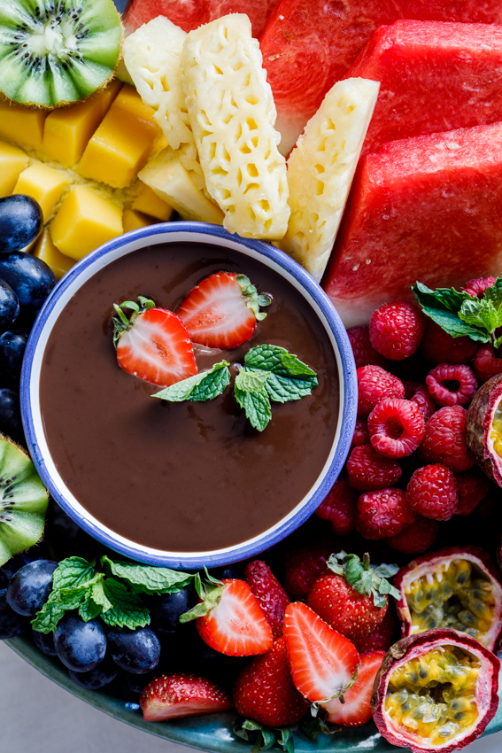
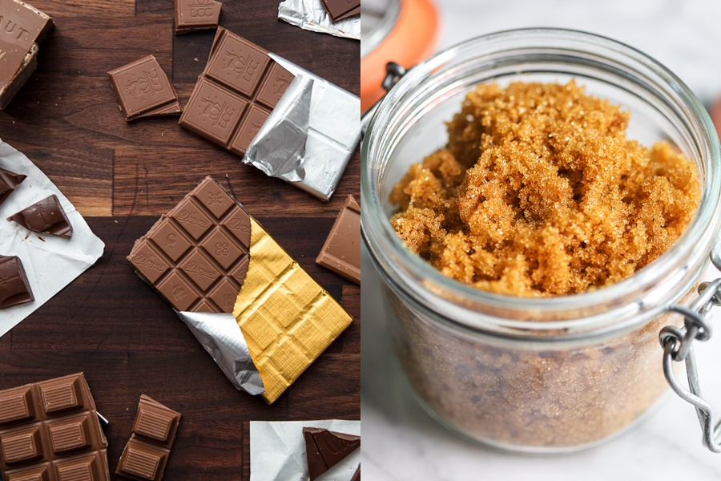
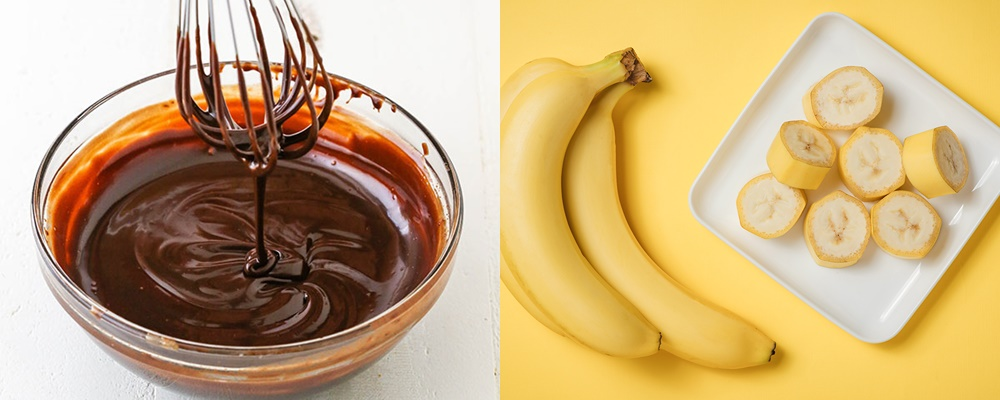

Mặt nạ sô-cô-la giúp da căng mịn, sáng bóng
PNO - Với tỷ lệ cacao nguyên chất từ 70% trở lên, sô-cô-la không chỉ rất tốt cho sức khỏe mà còn là ''siêu phẩm'' dưỡng da.
Được chiết xuất từ hạt cacao, sô-cô-la đen chứa nhiều catechin, polyphenol và flavanol có đặc tính chống oxy hóa mạnh mẽ. Các flavonol có trong cacao - thành phần chính của sô-cô-la đen - không chỉ bảo vệ làn da khỏi các tia UV có hại trong ánh nắng mặt trời mà còn cải thiện độ ẩm cho da và làm tăng khả năng lưu thông máu. Ngoài ra, bột sô-cô-la đen còn có thể chữa lành các triệu chứng viêm da dị ứng. Polyphenol trong cacao có khả năng làm giảm viêm và chữa khỏi một số triệu chứng dị ứng da khác. Dưới đây là các công thức dưỡng da toàn diện bằng mặt nạ sô-cô-la đen.

1. Mặt nạ sô-cô-la đen mật ong cho da dầu và da mụn
Sô-cô-la đen và mật ong đều có đặc tính chống oxy hóa, rất tốt cho da dầu và da mụn, giúp tiêu diệt vi khuẩn gây mụn, giúp da mềm mại và săn chắc hơn, đặc biệt không làm khô da.
Chuẩn bị:
- 1 muỗng canh bột cacao.
- 1 ít bột quế.
- 1 muỗng mật ong nguyên chất.
Thực hiện:
- Cho toàn bộ bột sô-cô-la đen, mật ong và bột quế vào chén, trộn đều (cho thêm mật ong nếu hỗn hợp quá đặc).
- Thoa đều hỗn hợp lên mặt và cổ, để trong vòng 20-30 phút sau đó rửa sạch. Thực hiện 2 lần/tuần.
2. Mặt nạ sữa tươi và sô-cô-la đen chống lão hóa
Mặt nạ sô-cô-la đen giàu chất chống oxy hóa giúp nuôi dưỡng làn da khỏe mạnh, đồng thời bảo vệ da khỏi các gốc tự do có hại. Sữa tươi dưỡng ẩm cho da, giúp da mịn màng hơn.
Chuẩn bị:
- 2 thanh sô-cô-la đen.
- 2/3 chén sữa tươi không đường.
- 1 muỗng cà phê muối biển.
- 3 muỗng đường nâu.
Thực hiện:
- Nấu chảy sô-cô-la đen, cho vào chén nhỏ, thêm muối biển, đường nâu và sữa tươi vào trộn đều.
- Chờ hỗn hợp nguội, thoa lên mặt và cổ, để trong 15-20 phút, sau đó rửa sạch lại với nước. Thực hiện 2 lần/tuần.

3. Mặt nạ trái cây và sô-cô-la đen làm dịu da
Mặt nạ trái cây và sô-cô-la đen giúp cấp nước và giữ ẩm cho da rất tốt, nuôi dưỡng da khỏe mạnh hơn. Ngoài ra loại mặt nạ này còn có tác dụng làm dịu da nên đặc biệt hữu ích vào mùa hè.
Chuẩn bị:
- 50gram sô-cô-la đen tan chảy.
- 1 quả chuối.
- 1 cốc dâu tây.
- 1 chén dưa hấu.
Thực hiện:
- Nghiền nhuyễn các loại trái cây, thêm sô-cô-la đen vào trộn đều.
- Thoa đều hỗn hợp lên da mặt, đắp mặt nạ trong ít nhất 20 phút sau đó rửa mặt lại bằng nước ấm. Thực hiện 2 lần/tuần.

4. Mặt nạ sô-cô-la đen, sữa dừa cho da xỉn màu
Mặt nạ sô-cô-la giúp nuôi dưỡng da và nhẹ nhàng tẩy lớp tế bào chết trên da. Sữa dừa có khả năng khóa ẩm, giúp dưỡng ẩm, bột cacao có tác dụng chống viêm và làm dịu da.
Chuẩn bị:
- 4 muỗng canh bột cacao.
- 4 muỗng cà phê bột.
- 8 muỗng heavy cream (có thể dùng sữa hạnh nhân, sữa chua thay thế).
- 2 muỗng canh sữa dừa.
Thực hiện:
- Trộn đều các nguyên liệu với nhau, thoa hỗn hợp lên mặt và cổ.
- Để yên trong 20-30 phút rồi rửa mặt sạch lại với nước. Chỉ nên dùng loại mặt nạ này 1 lần/tuần.
5. Mặt nạ sô-cô-la đen, đường nâu tẩy tế bào chết
Sô-cô-la đen và đường nâu giúp tẩy tế bào chết trên da và làm thông thoáng lỗ chân lông. Mật ong có khả năng tiêu diệt vi khuẩn có hại và giữ ẩm cho da.
Chuẩn bị:
- 1/3 chén bột sô-cô-la đen.
- 1/4 chén mật ong nguyên chất.
- 2 muỗng đường nâu.
Thực hiện:
- Trộn đều nguyên liệu thành hỗn hợp đặc quánh, thoa đều khắp mặt và cổ, thư giãn.
- Chờ đến khi mặt nạ khô, nhẹ nhàng lột mặt nạ ra hoặc rửa sạch bằng nước. Chỉ cần dùng loại mặt nạ này 1 lần/tuần.

6. Mặt nạ sô-cô-la đen và chuối làm sáng da
Sô-cô-la đen giàu chất chống oxy hóa. Chuối giúp giữ ẩm và duy trì độ đàn hồi da hiệu quả. Mật ong có tính kháng khuẩn, sữa chua giúp làm sáng da.
Chuẩn bị:
- 1 muỗng canh bột cacao.
- 1 muỗng mật ong.
- 1/2 chén chuối nghiền.
- 1 muỗng sữa chua.
Thực hiện:
- Cho tất cả nguyên liệu vào bát trộn đều đến khi thành hỗn hợp đặc sệt.
- Thoa đều hỗn hợp lên mặt và cổ, chờ mặt nạ khô rửa sạch bằng nước ấm. Thực hiện 2 lần/tuần để da sáng và mịn màng hơn.

-- Thu Vân (theo Stylecraze) --
Ý kiến
Hãy là người đầu tiên bình luận trong bài.
Nổi bật
-

-
#thoitrang
-
Hoa hậu nhí Bella Vũ diện 6 bộ váy quay MV ở Đà Lạt
-

-
#lifeStyle
-
Rời khỏi một cuộc tình lâu năm: tại sao lại ám ảnh bởi chuyện đáng hay không?
-

-
#fashion
-
Min House - Shop thời trang nữ được yêu thích